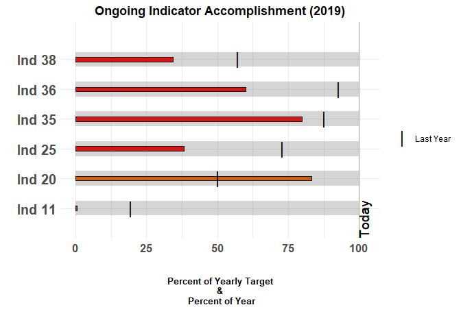

This package, bulletchartr is based on visualizing M&E deliverables or “Indicators”, however, it can be handy for anyone that depends on monitoring Key Performance Indicators (KPIs) or needs to track progress against different targets.
Quick Overview
The bullet chart was invented by Stephen Few, for the purpose of showing tons of info in a condensed form in KPIs. It is basically a variation of a bar chart that allows you to compare one measure against other metrics such as a target value and/or some qualitative measures of performance (ex. low - medium - high or poor - satisfactory - good). These qualitative labels are displayed as varying intensities of a single color from dark (low/bad/negative) to light (high/good/positive).
The output of the bullet_chart() function most closely resembles Stephen Few’s design:

Time-comparison bullet charts
The outputs of bullet_chart_symbols(), bullet_chart_wide(), and bullet_chart_vline() have a different x-axis scale to a regular bullet chart.
The x-axis represents both the percentage of the yearly target AND the percentage of the year that has passed. There is a vertical line showing TODAY, which shows at what percentage of the year and what percentage of the target we are at right now. The color inside the bar is green if we are near or past the TODAY line, orange when we’re close and red when we’re very behind schedule/target. One of the main differences between this set of functions is how they present the values for “Last Week” and “Last Year” for each of the indicators.
bullet_chart_symbols(file_name = read_example("Indicators_Targets_ext.xlsx"),
cal_type = "2019/05/02")

